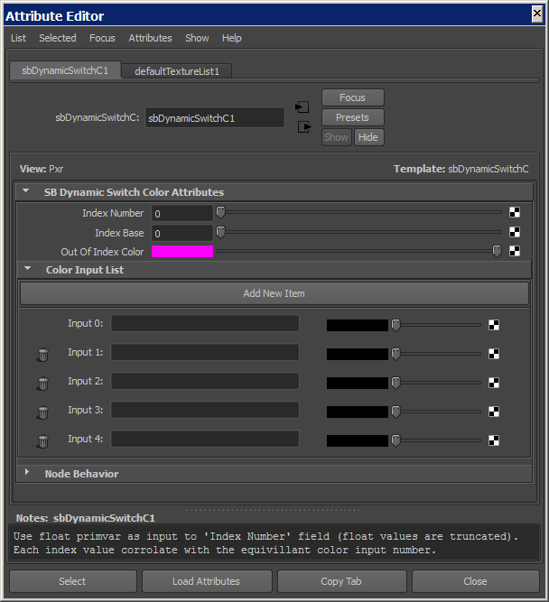
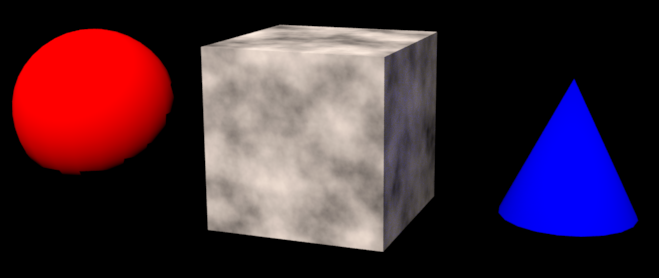

sbDynamicSwitchC |
|
VERSION 2.0 |
•Add compatibility with Maya 2018 |
VERSION 1.1 |
•Fixed varying variables (which resulted in jagged edges) |
VERSION 1.0 |
•Initial Release. This node helps with primvars. The description field is a visual aid; right click on the field to see a list of objects that are connected to the network that this node is connected to.   |